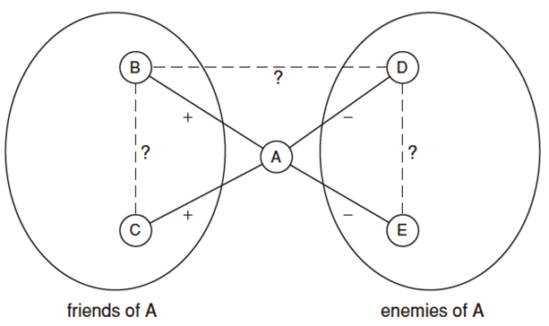

众智科学与网络化产业知识梳理
这是山东大学软件学院鹿旭东老师《众智科学与网络化产业》课程的笔记，主要涉及网络、群体与市场。教材是 2011年清华大学出版社出版图书《网络群体与市场》，作者是（美）大卫·伊斯利。 很喜欢课件上的一句话：计算思维+社会科学：让我们更加热爱科学，更加热爱生活。
一、图论基础
图＝事物＋联系，同构：画法不同，但本质上（结构上）相同
连通分量:节点相互连通 不包含在其他的连通分量中
AB相连，如去掉边则会导致AB分属不同的连通分量，则为桥
AB相连且AB没有共同的相邻节点，则成为捷径
欧拉路：从图中某个点出发，遍历整个图，图中每条边通过且只通过一次。
一个无向图有欧拉回路：图中的点都具有偶数度
一个无向图有欧拉通路：图中有且仅有两个奇数度点，其余点都是偶数度
二部图（二分图）:节点可以被分成两组，组内节点之间没有边
一个图是二部图，当且仅当其中不存在长度为奇数的圈
二、社会网络
三元闭包:如果两个互不相识的人有了一个共同的朋友，则他们俩将来成为朋友的可能性提高。
节点A的聚集系数 = A的任意两个朋友之间也是朋友的概率（即邻居间朋友对的个数除以总对数）
度分布函数P(k）表示网络中度为k的节点在整个网络中所占的比例。累积度分布函数pk表示度不小于k的节点的概率分布
平均路径长度：任意两个节点间最短路径的平均长度，也叫做网络的平均距离或网络的特征路径长度。
有效直径：至少90%的互连节点对之间的距离均不超过的最小值。
网络密度：网络中实际存在边数与可容纳的边数上限的比值。
介数：用来描述网络中节点承载最短路径数的能力，节点（或边）的介数等于网络中所有最短路径中经过该节点（或边）的概率之和
强三元闭包原理：如果A-B和A-C之间的关系为强关系；则B-C 之间形成边的可能性应该很高；每个节点要么符合（BC有边）要么违背强三元闭包原理（BC无边）。
若节点A符合强三元闭包，且至少有两个强关系邻居，则与A相连的任何捷径必定意味着是弱关系。证明：反证法
三、同质性
每个人的特质可分为两种：固有特质，自然属性；可变特质，建构属性
同质性的判别基准
两种节点类型占比分别为p和q，对网络中的任意一条边，两端点不同的概率是2pq（均匀情况），如果实际情况端点不同的比例明显小于2pq，则认为同质性明显。
选择： 人们倾向于和他们相似的人成为朋友 -> 社团闭包 “物以类聚，人以群分”
社交影响：人们也会因为需要和朋友们保持一致而改变自己的行为 ->会员闭包 “近朱者赤，近墨者黑”
隔离：同质性影响与结果（固有特质相同->可变特质趋同）
谢林模型（ 隔离的一种空间模型 ），发现隔离现象并不一定是个人刻意选择的结果
没有联系（通信）之前，相似（编辑相同文章）主要因为选择；达到足够相似度时则容易发生联系，然后社会影响开始对相似性提高起作用
四、正负关系
社会网络中三角关系的稳定性：从社会心理学角度看，一个平衡的三角关系要么（＋＋＋），要么（－－＋）。否则结构不平衡，即隐含有一种改变的力量（趋势）。
++-，有改变为+++的倾向 eg.美日韩
—-，有改变为—+的倾向 eg.三国演义联刘抗曹
图的结构是平衡的，若其中所有三角关系都是平衡的。
如果一个标记（＋／－）的完全图是平衡的，则要么它的所有节点两两都是朋友，要么它的节点可以被分为两组X和Y，其中X组内的节点两两都是‘＋’关系，Y组内的节点两两也都是‘＋’关系，而X组中的每个节点与Y组中每个节点之间都是‘－’关系。
证明：满足前述划分性质的图符合平衡定义、符合平衡定义的图一定满足前述性质

平衡定理的推广：放松条件 —— 弱平衡网络
(1) 弱平衡 —— 只是不允许+ + -
(2) 允许边的缺失 —— 考虑非完全图的情况
可以分成若干组，组内均为+关系，组间均为-关系
一个非完全图结构的平衡性
(1) 可以添加适当的边形成平衡的完全图
(2) 可以分成两个敌对阵营
这两种定义等价
非完全图结构的平衡性简单判别：
图是平衡的，当且仅当它不包含有奇数个负关系的边的圈。（当且仅当广度优先搜索时不存在同层的边）
五、小世界现象
人类社会网络中，任何两个人之间最短路径长度都不超过“6”（即“六度分隔”）
形成社会网络的两种基本力量：同质性，弱关系
Watts-Strogatz模型（r,k）
r是同质连接的参数，表示某个节点到那些相距r网格步以内的节点的连接；k是弱关系连接的参数，表示对某个节点，在网络中随机均匀选择k个节点建立弱关系连接。
Watts-Strogatz-Kleinberg模型 ：在Watts-Strogatz模型基础上，让两个节点之间存在随机边的概率与距离的某个幂次（q）成反比 。当q=2时，分散搜索达到最佳效果
q：控制远程连接的概率随距离递减的强度
定义“社会距离”：两人同属最小社团的规模。
六、搜索引擎
输入：一个有n个节点的网络（有向图），设所有节点的PageRank初始值为1/ n。选择操作的步骤数k对PageRank做k次更新操作，每次使用以下规则：
每个节点将自己当前的PageRank值通过出向链接均分传递给所指向的节点
若没有出向链接，则认为传递给自己（或者说保留）。每个节点以从入向链接获得的（包括可能自传的）所有值之和更新它的PageRank
同比缩减
在每次运行基本PageRank更新规则后，将每一节点的PageRank值都乘以一个小于1的比例因子s，0<s<1，经验值在0.8-0.9之间。
统一补偿
在每一节点的PageRank值上统一加上(1-s)/n。
随机游走：PageRank的另一种等价理解
想象一个人从一篇随机选择的网页开始，随机选择其中的链接浏览到下一篇网页，并不断如此进行，称为“随机游走”。
考虑一篇网页X，问：经过k步随机游走到达X的概率是多少？
可以证明：到达X的概率等于运行PageRank基本算法k步得到的值。
七、博弈论基础
博弈三要素：参与人、策略集、回报
严格占优策略：对一个参与人来说，若存在一个策略，无论另一个参与人选择何种策略，该策略都是严格最佳的选择，则这个策略称为是前者的严格占优策略。
理解的重点：无论另一个人选择何种策略
纳什平衡：互为最佳应对的策略组
零和博弈 —— 不存在纳什均衡的博弈
混合策略：参与人以一定概率在不同策略间进行选择
混合策略纳什平衡：
具有有限参与者和有限纯策略集的博弈一定存在纳什均衡（包括混合策略均衡）。
社会最优：参与者回报之和（社会福利）最大。
八、博弈论应用
| 价格递增 | 价格递减 | |
|---|---|---|
| 英式拍卖 | 一卖多买 | 一买多卖 |
| 荷兰式拍卖 | 一买多卖 | 一卖多买 |
| 出价方 | 买家出价 | 卖家出价 |
英式拍卖：有响应并不一定成交。成交之时在不再有报价的。
荷兰式拍卖的特点不是在于降价，而是在于有人响应后立刻成交。
1）英式拍卖——增价拍卖
买方不断出价（提高售价），部分买方逐渐退出，直至剩下一个买方，以当前价格获得商品
（2）荷兰式拍卖——降价拍卖
卖方从最高价逐渐降价，直至有第一个买方接受当前价格，获得商品
（3）首价密封拍卖
买方同时向卖方提交密封报价，出价最高者以其出价获得商品
（4）次价密封拍卖
买方同时向卖方提交密封报价，出价最高者以次价获得商品
考虑次价拍卖：我出价的占优策略即是真实估价，如果我拿到购买权，我会以低于我出价的价格购买商品，赚；如果我没拿到购买权，如果此时我想拿到购买权，需要出价比第一人高，支付原本第一人的出价，这超乎我对商品的估价，收益为负。因此，出真实估价是占优策略。
市场清仓价格的形成——过程不唯一
给定买方估值，卖方从初始价格（0,0,…,0）开始，按照轮次进行下述操作：
构造偏好卖家图
识别是否存在买方受限组（S）
若没有，则偏好卖家图中存在完美匹配，结束。
否则，将受限组对应的卖方集合N(S)中的价格都＋1
（也就是根据需求调整价格，“物以稀为贵”）
若因此使所有卖方价格都 >0，则统一约减最低价至0。
开始下一轮。（注：统一约减不影响偏好卖家图关系）
受限组：取右边的任何⼀组节点S，在左边且与其相连的点为N（S），表⽰所有S邻居的集合。 S的数量>N（S）的数量，则S为受限组。
九、广告
广告主的回报：点击率*点击收入-支付价格
GSP:
设n个广告位，按点击率r1, r2, …, rn，递减排列；
n个广告主，对每个点击有不同的出价，递减排列，b1, b2, …, bn；
沿着“次价拍卖”的自然思路，
将r1分给第一个广告主，按b2收取点击费
将r2分给第二个广告主，按b3收取点击费
…
将rn分给第n个广告主，收取某个门槛点击价格（可以是0）
GSP相当于是说；如果你的出价最高，则意味着你最看重这类商品的价值，于是你应该得到价值最高的商品，而且我们让你用次高的报价得到它！（其他类推）
VCG:
按照出价的高低，将广告位（按点击率递减顺序）分给广告主。
对于广告主 X ，他的支付价格如下确定
设，在该匹配中，其他人的出价总和为Σ1
从广告主集合中去掉 X，其他人按照出价形成新的最优匹配（对应一个新的出价总和Σ2）
Σ2−Σ1 就是 x要支付的价格（VCG价格）
十、权力
纳什议价解：网络中两个节点的外部选项可以量化为x和y，纳什认为双方将满意于均分$s=1-x-y，A=x+\frac{s}{2}，B=y+\frac{s}{2}$。
结果是一个边子集，匹配中的边划分价值“1”
稳定结果：不在结果中的边，两端节点价值之和不小于1
平衡结果：匹配中每条边满足纳什议价解
证明平衡结果一定是稳定结果：平衡结果⼀定是稳定结果，但是稳定结果不⼀定是平衡结果。因为在⼀个平衡的结果中，匹配中的每个节点至少得到它的最好的外部选项，因此不存在两个节点有积极性来通过利用⼀条当前未用的边来破坏⼀个平衡结果。
十一、从众与流行
经典问题：从蓝多罐中拿到蓝球/红球的概率/（从蓝多罐中拿到蓝球/红球的概率+从红多罐中拿到蓝球/红球的概率）>0.5，则猜是蓝多罐
只要接受数和拒绝数相差不超过一个，序列中的每个人就会简单地根据自己的私有信号做决定。
结论1：当一个私有信号比另一个多出2个就会形成级联
结论2：形成级联前后人能够推测前人的私有信号，级联开始后便不能推测
N->∞，信号个数相差2的概率为1
幂律——人们发现，拥有k个链入数的网页占比近似地与$\frac{1}{k^c}$成正比
十二、新事物的扩散
新事物的传播与扩散的过程，节点设定门槛值（周围节点采用新事物的比例），只有当大于门槛值时，这个节点才采用这个新事物
密度：每个节点的好友出现在这个集合中的比例的最小值
十三、信息不对称
让财富增长带来的“好的感受”随财富量的增加而减少： U(w)−U(w−Δw)>U(w+Δw)−U(w) ，只需用斜率递减的函数刻画，例如$\sqrt{x}$、$ln(x)$
赛马市场结论：投在A上的财富占比最好就等于A取胜的概率，在这样的效用函数下，投注策略与赔付率无关
如果你的智慧与“群众智慧”一致，则不会吃亏 !（总是保本）
例如A马赔付率o A = 2.5，那么我就应该把1/（2.5）=40%的钱投在A马上
劣币驱逐良币（柠檬市场）：
市场中的商品有多个质量等级
买家和卖家对每一等级商品有不同的底线价格（设同一等级中买家估值>卖家底价）
买卖双方对每一具体商品的质量信息不对称
因此买家只可能出一个期望价格，卖家按照所持有具体商品的底价与买家给出的价格的关系决定是否出售
期望价格与不同等级商品的占比分布和估值有关
市场失效：质量较差商品占比太高，买卖底价差太小
例子：
假设三种旧车各占1/3。
卖方底价分别为10，4，0
买方估值分别为12，6，0。买家多于车。
若预期为“市场上三种车各占1/3”
出价（12＋6＋0）／3＝6，于是
于是只有破车和柠檬在卖，即市场没有实现预期
会导致进一步预期“市场上只有破车和柠檬”
出价（6＋0）／2＝3，于是只有柠檬卖掉了，市场也没实现预期。市场失效。
十四、表决
趋同性：对于任意2个侯选项（X, Y），如果所有个体都偏好X，则群体排序结果中也应该偏好X，称之为趋同性原理（unanimity principle）
独立于无关项（IIA）：群体对侯选项（X, Y）的排序，仅取决于个体对它们的偏好，与个体对其他侯选项的看法无关。
即，X和Y在群体排序中的结果，不能因为某一个个体调整了某个 Z 的相对位置而改变
阿罗不可能定理：在3个或更多侯选项的条件下，任何多于2人参与的表决系统，都不可能同时满足（1）趋同性；（2）IIA（独立于无关选项）；（3）非独裁性
单峰偏好 － 表决者的合理行为(中间高两边低)
定理：若所有选举人的排序都满足“单峰偏好”，则按照少数服从多数规则两两比较侯选项产生的群体偏好是完备且传递的。
完备性（complete）
对于给定的选项（X,Y），要么偏好X，要么偏好Y；不能两个都一样，或“无可奉告”
传递性（transitive）
假定有3个备选项（X,Y,Z），如果在（X,Y）比较中，偏好X；在（Y,Z）比较中，偏好Y；则在（X,Z）比较中，应该偏好X
从传递性个体偏好，按少数服从多数聚合方式，得出了非传递的群体偏好，称为孔多塞悖论。
中位项定理—-从单峰个体排序形成群体排序的一种方法：
要点：逐次找出“最大的”（群体意义）
记L1, L2, …, LM为个体排序表，Li(1)为对应个体表中第一个（最大的）元素
将Li(1), i=1,2,…,M按照X1, X2, …… XN的特征序排列（一共M个，有的X可能有多次出现）
从如此排列的M个元素中取中间项为群体排序的第一项（最大的元素）
从L1, L2, …, LM中删除该元素，留下的依然是单峰排序表，接着可以取出第二个，等等
一句话总结：在个人排序具有单峰性质条件下，个人首选项列表的中间项在少数服从多数的两两比较中胜过所有其他候选项。
证明：
十五、流行病学
//15、 概念相关考点
SIR流行病模型:易感期（susceptible）,传染期（infectious）,移出期（removed）
最初，一些节点处于传染期I，所有其他节点处于易感期S
每个进入I的节点v在固定的步骤t1期间内具有传染性
在t1的每一步，以概率p将疾病传染给它的处于易感期的邻居
经过t1步后，节点v不再具有传染性，进入移出期，成为无效节点
SIS模型:终生免疫？
最初，一些节点处于状态I，其他节点状态S
每个进入I的节点v在固定的步骤t1期间内具有传染性
在t1的每一步，以概率p将疾病传染给它的处于状态S的邻居
经过t1步后，节点v不再具有传染性，返回状态S
SIRS模型:暂时免疫性
最初，一些节点处于状态I，其他节点状态S
每个进入I的节点v在固定的步骤t1期间内具有传染性
在t1的每一步，以概率p将疾病传染给它的处于状态S的邻居
经过t1步后，节点v不再具有传染性，进入R状并在步骤数tr期间维持在该状态，之后回到S状态
SEIR模型:易感期（susceptible）,潜伏期（Exposed）,传染期（infectious）,移出期（removed）
传染病有一定的潜伏期，与病人接触过的健康人并不马上患病，而是成为病原体的携带者
与 SIR 模型相比，SEIR 模型进一步考虑了与患者接触过的人中仅一部分具有传染性的因素，使疾病的传播周期更长。
小世界接触模型:远程连接使得一个地区发生的事情迅速影响到其他地方
线粒体夏娃:我们都源自10万至20万年前的一个单一女子，可能在非洲，是我们所有人的母系祖先
基于当代的一组个体，每次构建出前一代个体，每个当代个体均匀随机地选择一个前一代个体作为自己的单亲.当两个个体碰巧选择同一个单亲时，世系从这一点合并为一个共同的世系
不同的世系会不断减少
开始碰撞概率高
碰撞概率越来越低，但存在一个有限的预期时间，最终只剩下一个单一世系